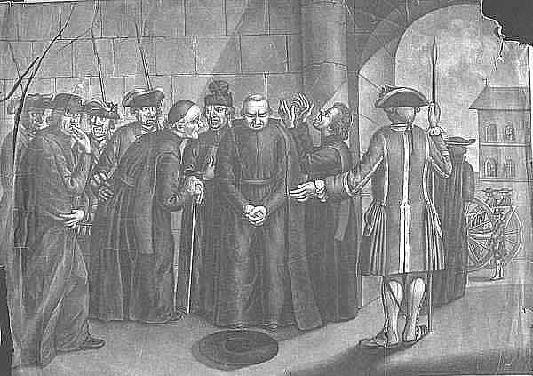

|
Expulsión
Fueron abandonadas las ruinas cuando los jesuitas fueron expulsados de todos los dominios de la corona de España , incluyendo los de Ultramar en el año 1767 . Las ruinas de la reducción fueron declaradas Patrimonio de la Humanidad por la Unesco en el año 1984, juntos con otras reducciones del área. Las ruinas han sido cubiertas por la vegetación.
La expulsión de los 112 jesuitas fue por orden del rey Carlos III de España. Esto provocó la interrupción por años de la agricultura, ganadería, minería y los talleres artesanales para indios, y también la difusión cultural. Sus misiones quedaron en ruinas.
Nunca quedó claro el porqué de tanta saña contra los jesuitas, pero una de las razones es el odio de los regímenes autoritarios hacia la inteligencia. Ver más información.
La marca del jesuita es su "intelecto" (estudio profundo en humanidades, filosofía, teología e idiomas) y su acción misionera (extendida por más de la mitad del planeta).
Profesan tres votos: obediencia, pobreza y castidad.
"Expulsión jesuitas"
Causas que provocaron la expulsión de los jesuitas:
El rey Carlos III recelaba de la fidelidad de los jesuitas, porque no aceptaban la política de imponer la voluntad del rey sobre la iglesia. Sino que prestaban apoyo al Papa en sus enfrentamientos con los gobiernos de las naciones europeas.
Los jesuitas habían alcanzado la independencia cierta independencia económica y militar de la corona.
Discrepancias en los porque se debía envangelizar
Lo anterior llevó a Carlos III a optar por la misma vía que habían optado los imperios de Francia y Portugal, y el 27 de Febrero de 1767 firmó la orden de expulsión de los jesuitas de todos los dominios de España y la confiscación de sus propiedades.
Los gobiernos ilustrados de la Europa del siglo XVIII se propusieron acabar con la Compañía de Jesús por su defensa incondicional del Papado, su actividad intelectual, su poder financiero y su influjo político.
|